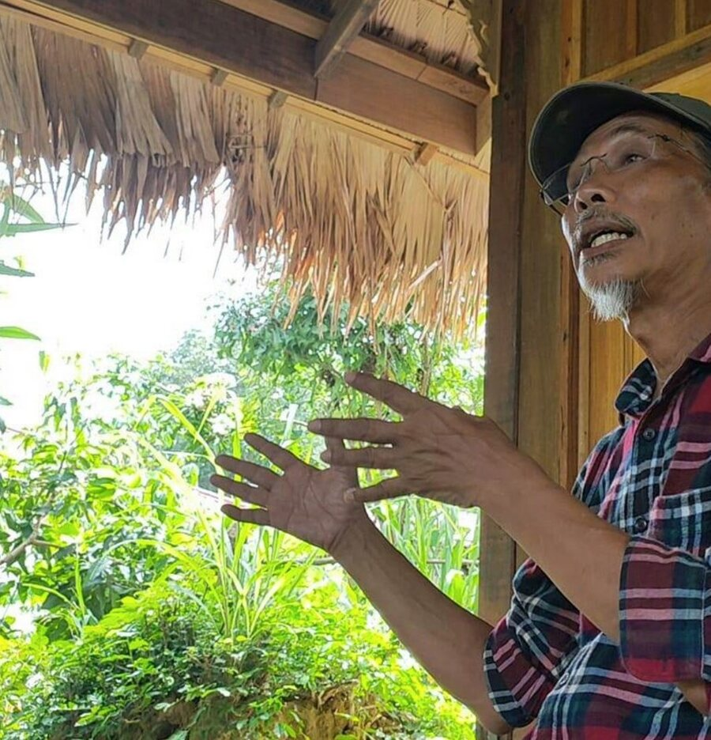

Dr. Mahamad Hakimi bin Ibrahim
Pengarah
34 tahun sebagai pensyarah Teknologi Persekitaran di Universiti Sains Malaysia. Ijazah Kejuruteraan Kimia dari UMIST, PhD dari Universiti Kebangsaan Malaysia (1994). Mengetuai projek Kompos to Kelulut (K2K) di USM dari 2014 hingga 2019. Pelatih utama ETC.
Melalui K2K: Kedutaan Jerman (Go Green Kompos to Azolla), FRIM (Train the Trainers), sekolah, universiti dan agensi kerajaan.